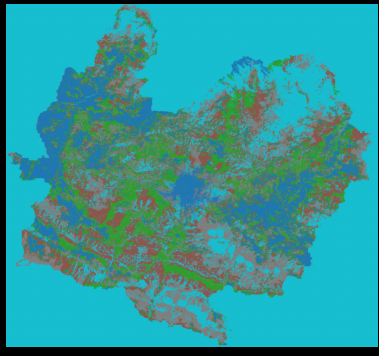
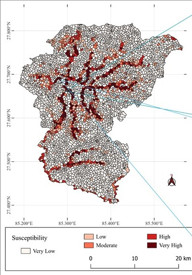

Landfill site suitability mapping
A suitability map for landfill sites across Kathmandu Valley and nearby districts, built from geospatial layers with U-Net, ResU-Net and DeepLabV3.
96.97%accuracy
0.92mean IoU
0.96Dice
Machine learning research first, then the products I have shipped and the things I built to learn.
A suitability map for landfill sites across Kathmandu Valley and nearby districts, built from geospatial layers with U-Net, ResU-Net and DeepLabV3.
Risk mapping for urban river floods in Kathmandu Valley. A CNN and a Random Forest were trained on the same geospatial data; the CNN won with balanced class performance.
A pashmina store built on Django and Next.js at Octacore. The chatbot answers product questions with hybrid BM25 and vector retrieval, a reranker and conversation memory.
Visit the siteMarketing site for a Nepali mineral water brand: scroll animation, a product carousel, a multi-step order form and a depot map. Runs on Cloudflare Pages.
Visit the site
A suitability map for landfill sites across Kathmandu Valley and nearby districts, built from geospatial layers with U-Net, ResU-Net and DeepLabV3.
Code on GitHub
Risk mapping for urban river floods in Kathmandu Valley. A CNN and a Random Forest were trained on the same geospatial data; the CNN won with balanced class performance.
Code on GitHubA pashmina store built on Django and Next.js at Octacore. The chatbot answers product questions with hybrid BM25 and vector retrieval, a reranker and conversation memory.
Visit the site
Marketing site for a Nepali mineral water brand: scroll animation, a product carousel, a multi-step order form and a depot map. Runs on Cloudflare Pages.
Visit the sitePredicts every match from group stage to final with Random Forest and XGBoost, tuned with Optuna and explained with SHAP.
ML · Python · 2026GitHub ↗Customer chatbot for cheers.com.np, built as n8n workflows at Octacore.
Automation · n8n · 2026PrivateLogistics marketing site on Next.js 15, Tailwind v4 and GSAP ScrollTrigger.
Web · Next.js · 2026GitHub ↗Marketing and enrolment site on Next.js 15, Tailwind, GSAP and Framer Motion.
Web · Next.js · 2026GitHub ↗A task-based app blocker for staying focused.
App · TypeScript · 2026GitHub ↗A guide app for GTA VI, written in React.
App · React · 2026PrivateAn anime watch face app with full customisation.
App · Watch face · 2026PrivateA Tekken-style fighter with animations, collision detection and responsive controls.
Game · Pygame · 2023GitHub ↗A 2D black hole simulation.
Sim · Pygame · 2024GitHub ↗A console contact book in C++: add, search, edit and delete records.
Tool · C++ · 2023GitHub ↗